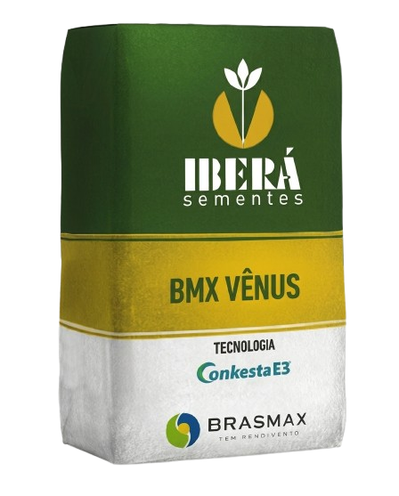
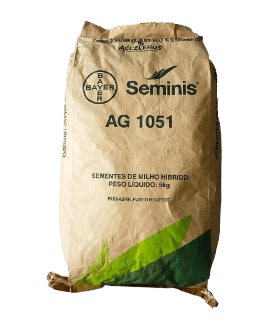
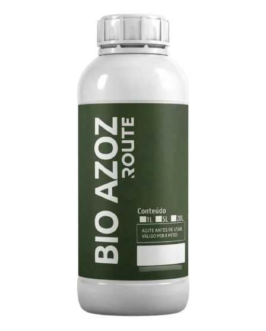
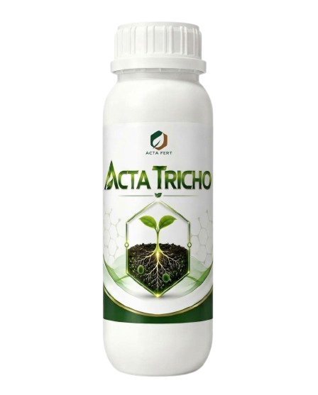
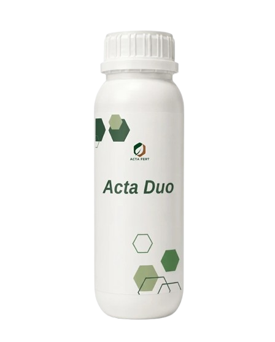
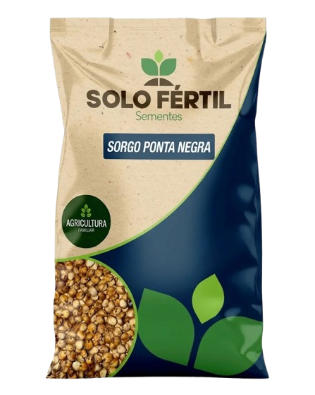
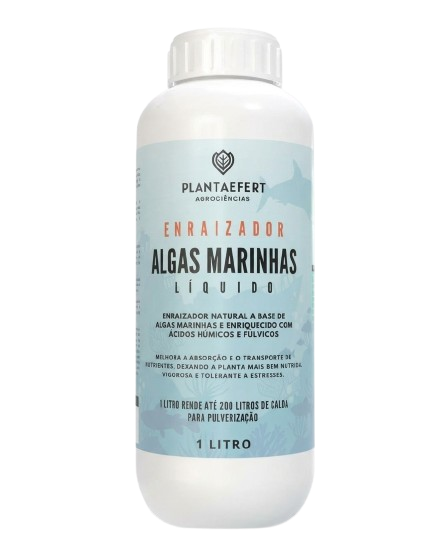
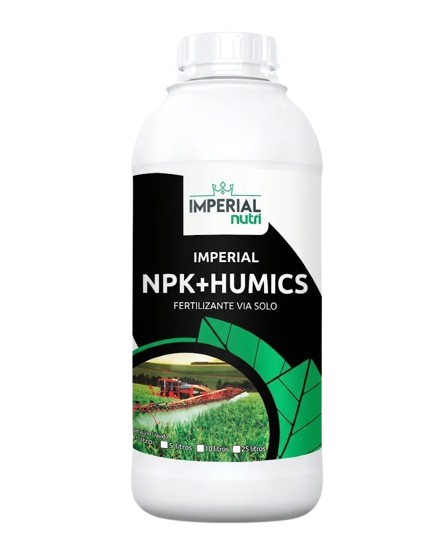
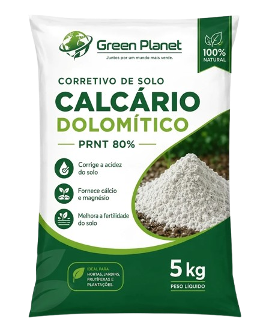

Catálogo de Sementes Modificadas e Insumos Biológicos

Alta resistência a estresse hídrico e pragas da lagarta.
R$ 450,00 / saca

Alto potencial produtivo com tolerância a herbicidas e cigarrinha.
R$ 380,00 / saca

Fixador biológico de nitrogênio para gramíneas e leguminosas.
R$ 120,00 / litro

Controle biológico eficiente contra fungos de solo.
R$ 85,00 / kg

Defensivo natural de alta eficácia no controle de pragas como mosca-branca e cigarrinhas.
R$ 145,00 / litro

Alta produção de massa verde para silagem com excelente tolerância à seca.
R$ 180,00 / saca

Acelera o desenvolvimento inicial e reduz o estresse hídrico da lavoura.
R$ 120,00 / litro

Melhora a estrutura física do solo e aumenta a absorção de nutrientes pelas raízes.
R$ 110,00 / litro

Corrige a acidez do solo e fornece cálcio e magnésio de rápida absorção.
R$ 45,00 / saca